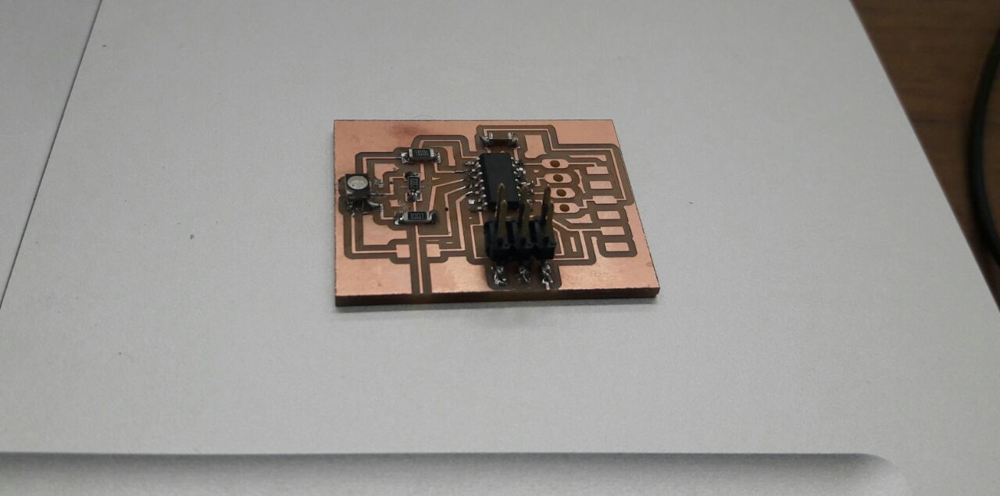
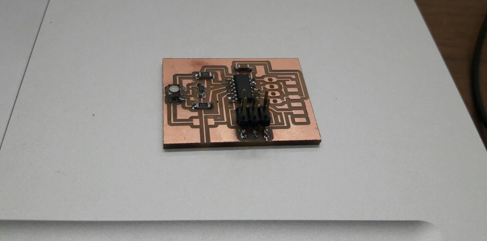

Week 14 | Input Devices | Apr 25
Fab Academy 2018 | Archive
Sketch of Final Project
I will use Ultrasonic distance sensor as an input device for my final project so I decided to make a board with Ultrasonic senor. This sensor is SONAR which can detect distance. I have also included RGB LED so that I can detect at what range the object is detected by the ultrasonic.
The first step is to design schmetic in Eagle of the circuit. This week I wanted to explore ATtiny 44 and used it to make the circuit. I refered to Neil's ATtiny 45 board for the connections.

Next step is to make board out of the schematic I made. I arranged all the components with minimum cross lines so while autorouting it does not create amy problem and the traces would be clear.

I modified the traces using the rout command so that when I open in fabmodules, the traces do not merge with each other. I reduced the width of the traces to 6.

opened this board in fabmodules and was not showing any errors. I milled the board but while doing outer cut it cut the path so the board got wasted. I realised this when I had already soldered it half.
 

This board got wasted so I milled another board. Because of the bad alignment of the board, it again got wasted.

This happened because the sacrificial board did not stick properly on the bed and while milling the board it satrted moving and the bit started cutting the wrong path. It took time in aligning the bed properly and after I was able to mill the board properly. I was able to solder it properly.


Next step was of programming the circuit. i decide programming the board using Arduino software. I used my ISP board which I made in week 5. I changed setings of ATtiny 44 but it showed error while burning the Bootloader so was not able to program it. (Bootloader is a program which runs at the time we connect the Arduino to uor PC and also when we RESET the board. If we don't want this kind of delay then you can use the command "Burn Bootloader")


I again tried programming it using Arduino Board but this time still it showed the error that "Programmer is not responding"